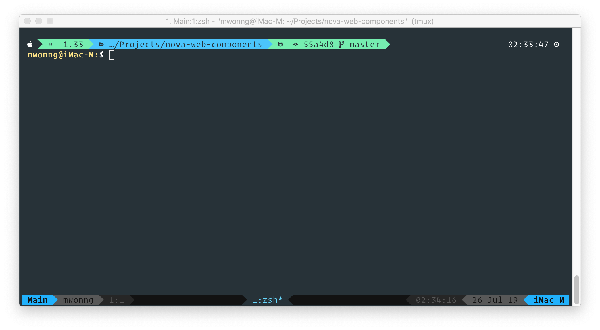
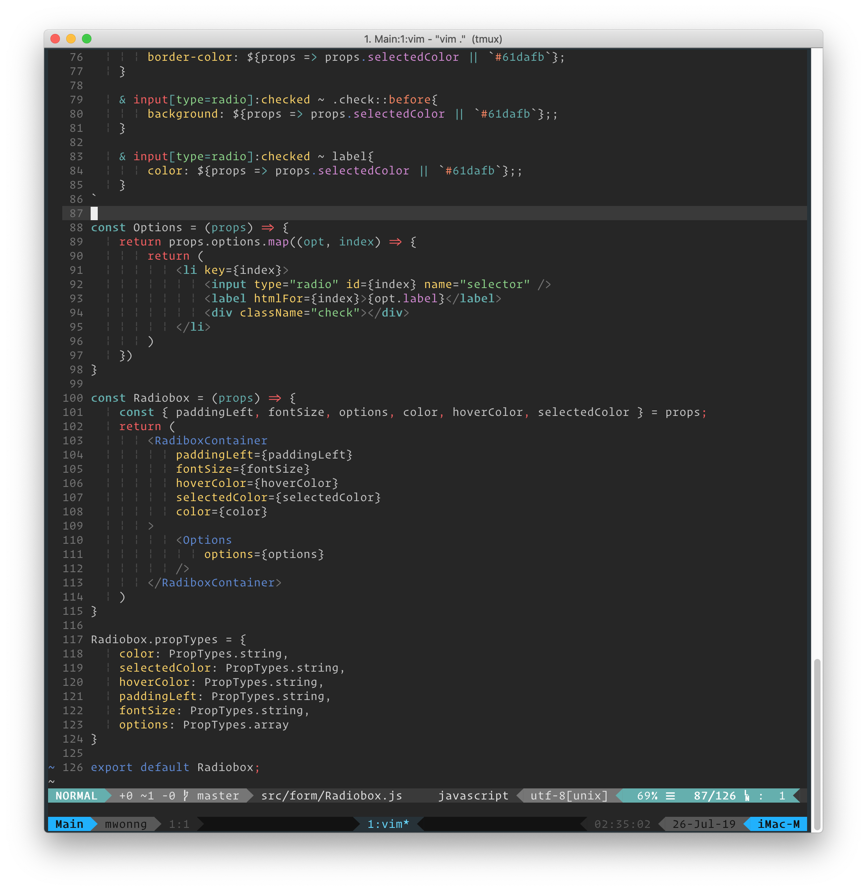

Working with tmux | 工作中使用 tmux
Table of Contents
As now I'm working on NAB, the projects are based on AEM and using React as SPA. Because AEM require at least two service running and sometime we need a mockup server as well. so that's means I have to keep 3 service alive for backend. Totally have 4 service with Node instance.
Problem
As now I'm working on NAB, the projects are based on AEM and using React as SPA. Because AEM require at least two service running and sometime we need a mockup server as well. so that's means I have to keep 3 service alive for backend. Totally have 4 service with Node instance.
I don't know why Adobe buiding this product, but i won't work with AEM after this project.
For monitoring all service and it is better to resume as it might restart. iTerm is absolute a good terminal on Mac. but it can only save your last session location and can not detatch your session.
My Screen
iTerm screenshot

Vim screenshot

Tmux for terminal session management
There is a lot of guide to teach basic usage of Tmux, so just Google for general question.
I just list my setting here. I might still update in the future.
In Tmux, you can also preview all different windows or panels if you want. Now i have move to Tmux for all my termianl works.
FAQs
- How to copy text in Tmux?
it can be copied by setting mouse on set -g mouse on and using option key to select and copy, or if you are using iTerm, you can enable Applications in terminal may access clipboard in General.
you can also use default prefix + [ to enable copy mode and select text and press enter then use prefix + ] to paste.